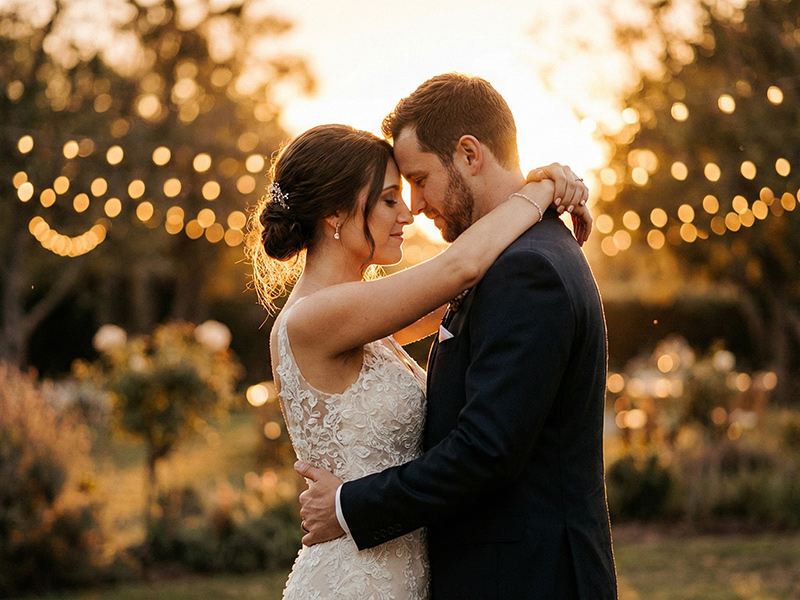

Mariage
Des moments d'amour capturés avec authenticité
Photographe professionnel spécialisé dans les mariages, portraits et la beauté de la nature. Basé à Paris, je vous accompagne partout en France pour immortaliser vos moments précieux.
Découvrir mon travailDécouvrez mes univers photographiques
Passionné par la photographie depuis plus de 10 ans, je mets mon expertise au service de vos projets les plus précieux. Mon approche ? Capturer l'authenticité de chaque instant, révéler les émotions qui font la beauté de nos vies.
Que ce soit pour immortaliser le plus beau jour de votre vie, créer des portraits qui vous ressemblent ou explorer ensemble la magie de la nature, je vous accompagne avec sensibilité et professionnalisme.
En savoir plus sur mon parcoursDiscutons ensemble de vos envies et créons des souvenirs inoubliables.
Me contacter